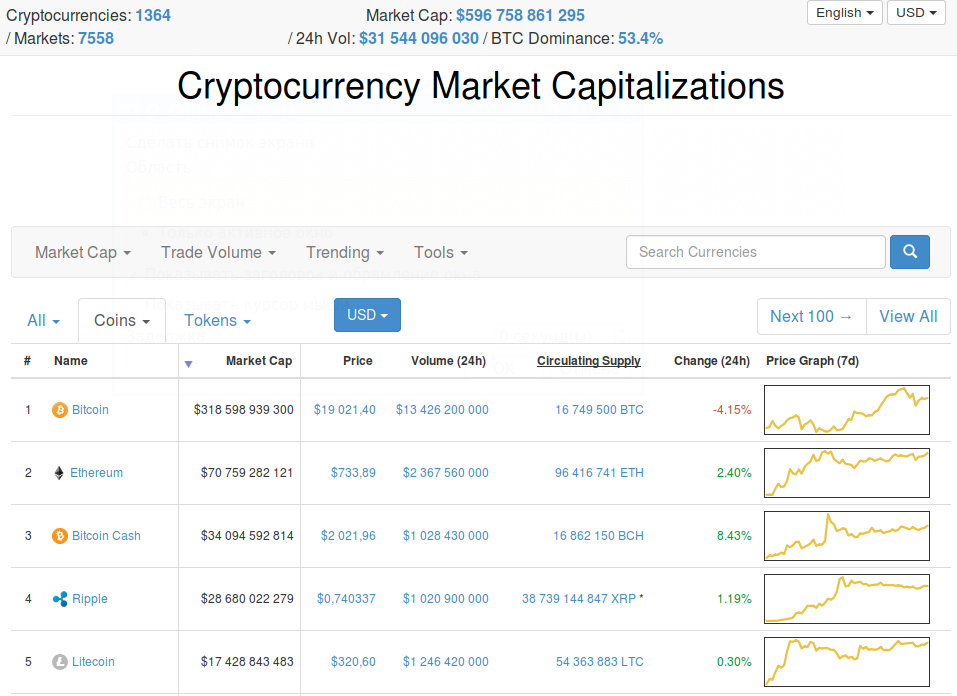

Для просмотратра и сравнения курсов криптовалют можно использоваться сайт CoinMarketCap.com. Он представляет графики курсов основных криптовалют валют, давая возможность сортировки их по различным признакам:
Выглядит сайт так:

Видно, что даже можно приблизительно сравнивать курсы криптовалют и их динамику с помощью графиков курсов. При клике на график